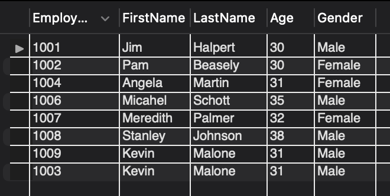
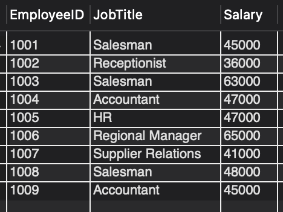
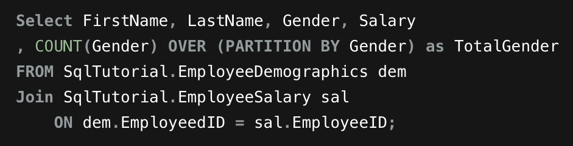
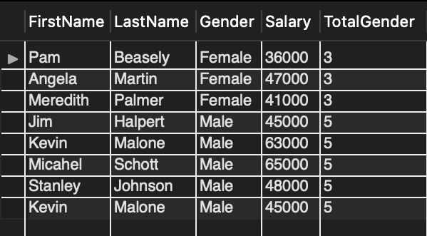
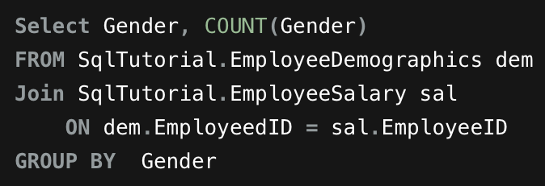
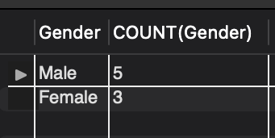

SQL Joins Project
I completed this Joins Intro from the guidance of a youtuber, Alex The Analyst, where he walked through joins from a dataset.
Dataset

Here's the EmployeeDemographics table That I originally created in Excel and then saved it and imported it into SQL as a
data source. It gives each employye an EmployeeID and a column for FirstName, LastName, Gender, & Age.

Here's the EmployeeSalary table that I also created in Ezxcel and then saved it and impoted it into SAL as a data source.
It matches the Employee ID from the EmployeeDemographics table and JobTitle & Salary columns for the corresponding employee.
Code Snippets


Here's a screenshot from the first Join Statement we do as we join both tables above by a common attribute that are in both tables,
EmployeeID. You can see the output we get as we find the number of male's and female's in the corresponding tables. This code creates
a TotalGender column that adds to the original tables but doesn't really gives us what we need because the TotalGender is next to a corresponding
employee, we need to just separate into 2 rows for male's and female's.


Here's a screenshot for the next Join Statement we do as we're essentially doing the same thing but instead we're selecting just 2 columns,
1 being the Gender and 2 being a made up column we're calling CountGender. We are also adding a GroupBy statement to group by Gender. We see
from the output screenshot that now there are only 2 rows from the joined tables that now show the number of male's and female's counted in
the 2 tables.
Full Code
You can find more imformation of the Tableau Project Here: GitHub